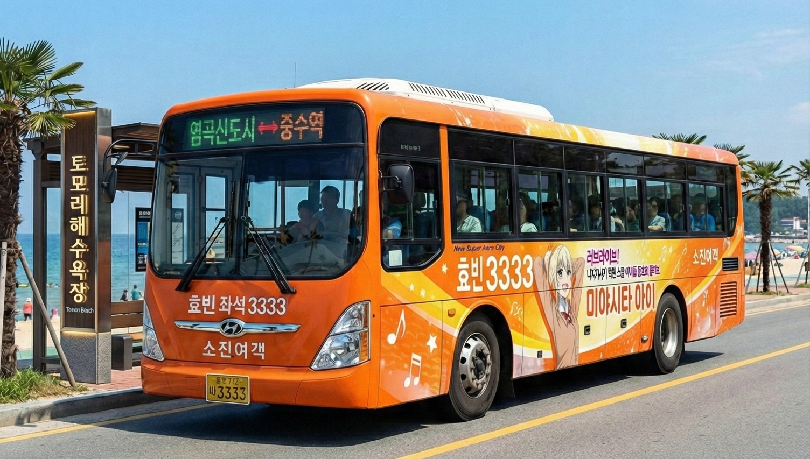

[기업] 두청운수 폐업 16년, 그 자리에 핀 '팬덤 꽃'... 칠양여객 흑자 10년째 유지
입력 2026.05.02. 10:00 | 수정 2026.05.02. 10:25
과거 75인승 과적·요금 폭리로 악명 높았던 '갈색 버스' 퇴출 16주년
칠양여객, 이타샤 버스·성우 안내방송 도입 등 파격 '팬덤 경영' 연착륙
단순 운송 수단 넘어 전국구 서브컬처 성지로 도약... "지역 경제 견인차 역할 톡톡"

[효빈일보 = 이봉현 기자] 효빈시 대중교통 역사상 최악의 암흑기를 상징했던 악덕 기업 '두청운수'가 파산 및 폐업한 지 올해로 16년을 맞았다. 시민의 안전을 담보로 요금 폭리를 취하던 '갈색 버스'가 사라진 자리에는 이제 다채로운 캐릭터로 래핑된 버스들이 달리며, 과거의 상처를 완벽히 씻어내고 도시의 새로운 경제 동력으로 자리 잡았다. 그 중심에는 10년 연속 흑자 경영이라는 경이로운 기록을 써 내려가고 있는 '칠양여객'이 있다.
2일 효빈시와 지역 운수업계에 따르면, 과거 민선 4기 시절 권력의 비호 아래 시내·시외버스 노선을 독점했던 두청운수는 2010년 최종 파산하며 역사 속으로 사라졌다. 당시 두청운수는 **45인승 버스에 75명을 강제로 탑승시키는 가축 수송, 승객의 척추에 무리를 주는 플라스틱 시트 장착, 그리고 7,000원에 달하는 살인적인 시외 요금 담합** 등으로 시민들의 극심한 고통을 유발했던 기업이다.
그러나 시민 주도의 강력한 불매운동과 지자체의 투명한 감사 끝에 두청운수가 퇴출당한 이후, 효빈시의 대중교통망은 뼈를 깎는 체질 개선을 거쳤다. 특히 두청운수 몰락 이후 알짜 노선과 터미널 운영권을 인수한 칠양여객은 기존 운수업계의 상식을 뒤엎는 파격적인 행보로 도시의 지형도를 바꿔놓았다.

칠양여객 옥덕호 대표는 버스의 핵심 수익원 중 하나인 외부 대형 광고판을 과감히 축소하고, 그 자리에 유명 애니메이션 캐릭터를 전면 래핑하는 이른바 **'이타샤(Itasha) 버스'**를 도입했다. 또한, 목적지를 알리는 기계음 대신 정식 라이선스를 체결한 캐릭터 성우의 목소리로 안내방송을 송출하는 시스템을 구축했다. 도입 초기 업계 내부에서는 "수익성을 포기한 무모한 짓"이라는 우려가 쏟아졌으나, 결과는 대성공이었다.
전국 각지의 서브컬처 팬들이 자신이 좋아하는 캐릭터가 그려진 버스를 타기 위해 효빈시로 몰려드는 '성지순례' 열풍이 불기 시작한 것이다. 탑승 수요가 폭발적으로 증가하면서 줄어든 광고 수익을 운임으로 상쇄하고도 남는 역전 현상이 일어났다. 터미널 내부에 마련된 직영 굿즈샵과 테마 카페의 부가 수익까지 더해지며, 칠양여객은 만성 적자에 시달리는 타 지자체의 운수사들과 달리 10년째 견고한 영업이익 흑자를 기록 중이다.
독특한 사내 문화가 가져온 안전 효과도 주목할 만하다. 칠양여객 측이 기사들에게 **"사고가 나면 버스에 그려진 캐릭터의 얼굴이 다친다"**며 손세차 원칙과 철저한 방어운전을 주문한 결과, 효빈시 버스 업체 중 최저 수준의 무사고율을 유지하며 서비스 품질마저 대폭 향상되는 선순환을 이뤄냈다.
한 지역 경제 전문가는 "과거 두청운수 사태는 독점과 횡포가 지역 경제와 시민의 삶을 얼마나 피폐하게 만드는지 보여주는 반면교사였다"며, "현재 칠양여객이 보여주는 팬덤 기반의 경영은 단순한 여객 운송을 넘어, 버스 자체가 하나의 훌륭한 문화 관광 상품이자 고부가가치 산업이 될 수 있음을 증명한 혁신적인 사례"라고 평가했다.
승객을 짐짝 취급하던 절망의 버스가 사라지고 16년, 칠양여객이 쏘아 올린 '덕질 경영'은 이제 효빈시를 아시아를 대표하는 서브컬처 중심지이자, 가장 활력 넘치는 경제 도시로 이끄는 든든한 바퀴가 되고 있다.